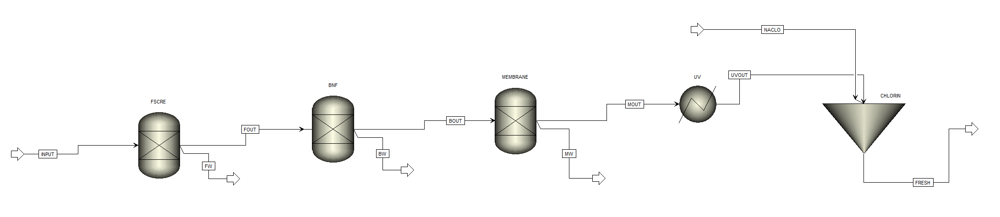
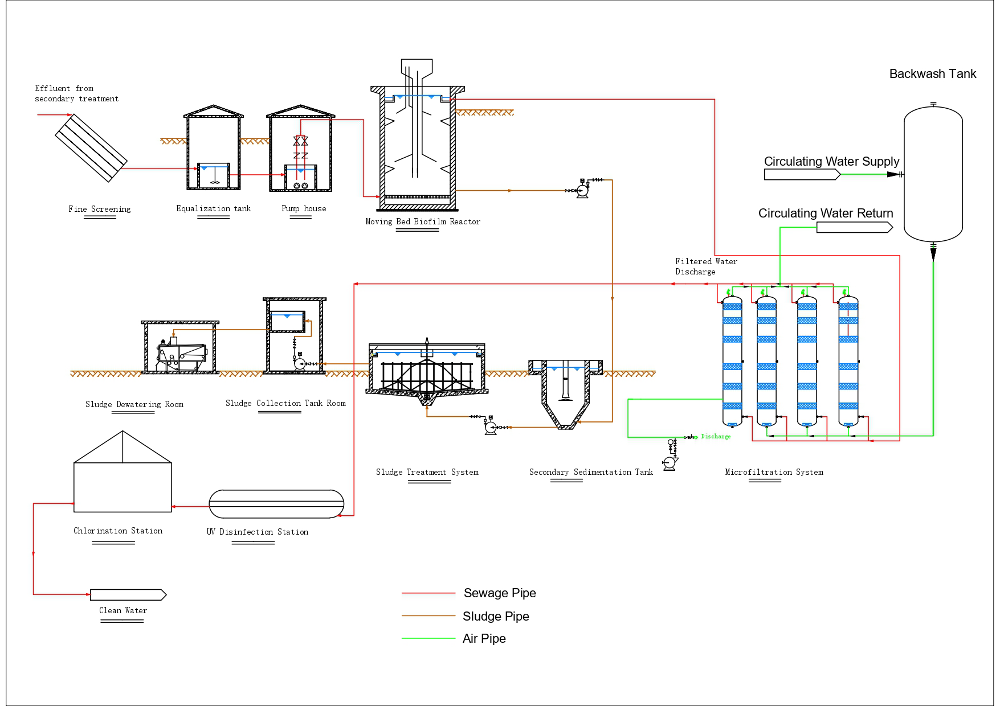
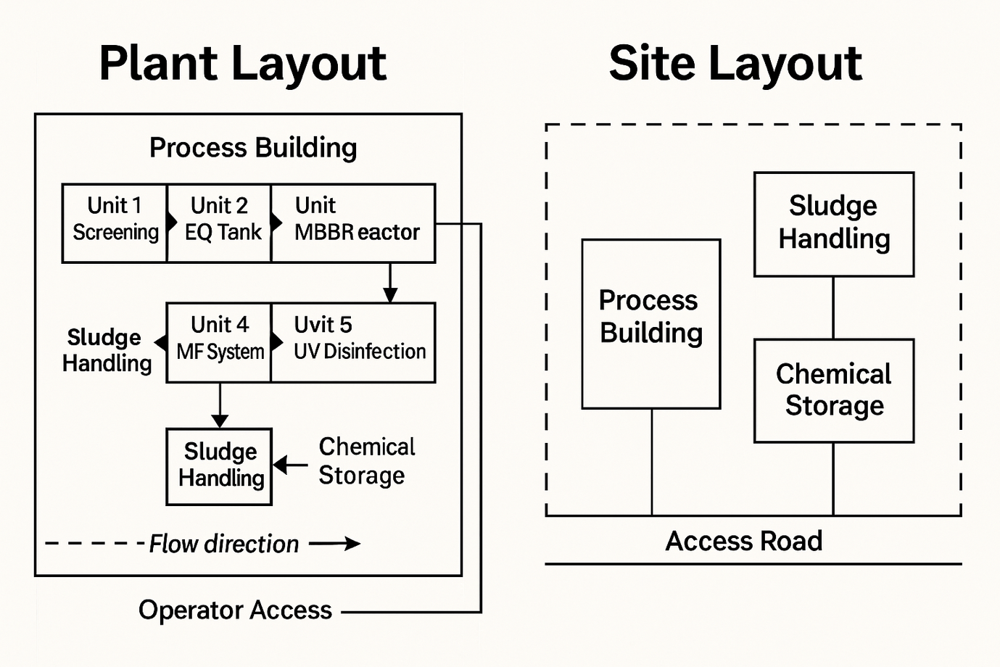
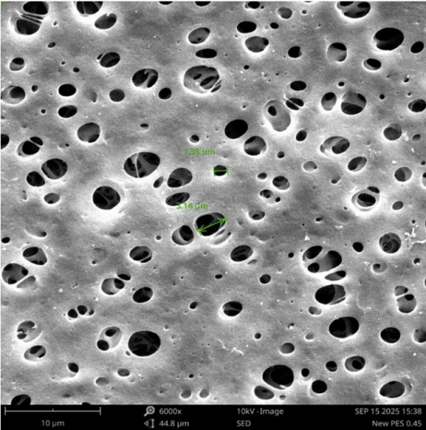

Course
ENG5105/5106 — Detail Design Report
Institution
Monash University, Clayton
Team
CheMat5 — 5 Engineers (Materials & Chemical)
Project Overview
The City of Ballarat currently treats wastewater to secondary effluent standard. This project tasked our interdisciplinary team with designing the tertiary stage upgrade required to reach EPA Victoria Class A recycled water — a standard permitting safe reuse for irrigation, landscaping, industry, and firefighting.
The result is a fully detailed design for a 6,000 m³/day facility: process-modelled in Aspen Plus, complete with a full P&ID, HAZOP analysis, plant layout, and financial feasibility study. Capital cost approximately AUD $9 million. Payback within 6–7 years through recycled water revenue.
My Contribution
Our team was genuinely interdisciplinary — two materials engineers and three chemical engineers, each with different strengths and backgrounds. That mix was the design intent of the unit, and it created real coordination challenges that I took on as an informal project lead alongside my technical workload.
My assigned area covered membrane technology and sustainability, but in practice I contributed input across most sections of the project: reviewing process design decisions, cross-checking mass balance logic, providing feedback on the P&ID, and helping shape the HAZOP analysis. The one area I deliberately stepped back from was the Aspen Plus modelling, which sat squarely within the chemical engineering team's expertise and where my input would have added noise rather than value.
On the materials side, I worked closely with my co-materials engineer to build the research and experimental foundation together. Structuring a literature review from scratch, designing a methodology for membrane characterisation, and interpreting SEM and FTIR results are skills built through practice — and part of my contribution was working through that process collaboratively, so the work we produced together was rigorous and defensible. The membrane selection recommendation we arrived at held up to scrutiny precisely because it was grounded in evidence we generated ourselves.
- Membrane technology lead: Literature review benchmarking PES, hydrophilic and hydrophobic PVDF, and Teflon membranes across flux, fouling resistance, chemical compatibility, and long-term durability under NaOCl cleaning cycles.
- Lab-scale testing: Designed and co-led dead-end filtration experiments on five membrane types, characterised by SEM imaging, FTIR spectroscopy, contact angle measurement, and flux testing. Outcome: hydrophilic PVDF (MDI-HVF) selected for the full-scale design.
- Life Cycle Assessment: Environmental, social, and economic sustainability assessment covering material flows, waste minimisation, energy recovery, and long-term ecological impact of the selected configuration.
- Cross-team input: Provided technical review and feedback across process design, P&ID, HAZOP, and financial feasibility sections — ensuring coherence between the materials and process engineering workstreams.
- Report integration: Consolidated all contributions into a submission-ready document, resolving inconsistencies between sections and ensuring the final output read as a single coherent piece of engineering work.
Treatment Train
Five stages selected to meet Ballarat's specific effluent profile, seasonal operating range (10–20°C), and the requirement for a compact, energy-efficient design that integrates into existing infrastructure:
Fine Screening
1–2 mm aperture screens remove fibres, plastics, and debris. Removes up to 98.7% of fine materials that would otherwise foul membrane modules downstream.
MBBR Nitrification
Moving Bed Biofilm Reactor with Nitrosomonas and Nitrobacter converts ammonia to nitrate. Achieves ~95% ammonia removal under Ballarat operating conditions.
PVDF Microfiltration
Hydrophilic PVDF membranes (0.2 μm) deliver turbidity below 2 NTU, 97.5% TSS removal, and 94.6% COD reduction. Automated backwash at TMP > 0.2 MPa.
UV Disinfection
Three parallel LPHO reactors (2+1 redundancy) at 40 mJ/cm² validated dose. Real-time dose-pacing control. "No UV — No Flow" fail-safe interlock prevents non-compliant discharge.
Chlorination
Low-dose NaOCl maintains disinfectant residual through storage and distribution, preventing microbial regrowth and ensuring Class A integrity to the end-user.
Process Model — Aspen Plus
The full treatment sequence was modelled in Aspen Plus using the ENRTL-SR thermodynamic property method, simulating mass and energy balances across each unit operation to confirm design feasibility at 6,000 m³/day.

Aspen Plus simulation — full tertiary treatment train: FSCRE → BNF → MEMBRANE → UV → CHLORINPiping & Instrumentation Diagram
A full P&ID covers the equalisation tank, pump house, MBBR, and microfiltration system — including all instrumentation tags, control loops (LICA, PI, TI), safety interlocks (SIS), and valve logic for duty-standby pump operation and automated backwash triggering.
 P&ID: Equalisation Tank → MBBR → Microfiltration System (DN150 piping, full instrumentation and redundant pump sets)
P&ID: Equalisation Tank → MBBR → Microfiltration System (DN150 piping, full instrumentation and redundant pump sets)
HAZOP Analysis — Key Process Nodes
HAZOP was conducted across all ten process nodes using standard guidewords (No, More, Less, Reverse, Other Than). The five highest-consequence deviations are shown below — each identified with a defined safeguard that was incorporated into the control design and P&ID. The "No UV — No Flow" interlock was the most critical output: it prevents non-compliant effluent from reaching distribution under any UV system failure mode.
Plant Layout


Membrane Selection — Lab Testing
Five membrane types were evaluated at laboratory scale. The objective: identify the optimal material for the full-scale microfiltration stage based on real performance data, not just literature values.
Teflon (MDI-TF2)
Eliminated first. Zero flux recorded — extreme hydrophobicity prevented effluent from penetrating the membrane at all under dead-end conditions.
Hydrophobic PVDF (MDI-SVF)
Zero measurable flux. Contact angle above 90° confirmed poor water affinity. SEM showed extensive pore blockage and surface fouling post-test.
PES 0.45 μm
Counter-intuitively slower than PES 0.22 μm. Larger pores accelerated sedimentation and bridging effects, forming a dense filter cake that collapsed flux.
Hydrophilic PVDF (MDI-HVF) — Selected
Best overall: strong wetting, stable flux, cleanest post-test SEM surface, and full compatibility with automated NaOCl backwash cleaning cycles at full scale.

SEM imaging characterised pore morphology before and after filtration across all five membrane types. Post-test comparison revealed the hydrophilic PVDF surface remained significantly cleaner than PES counterparts, directly supporting its selection.
FTIR spectroscopy confirmed surface chemistry: C=O carbonyl, C–O, and C–C functional groups were identified in fouling layer analysis, informing cleaning cycle design and long-term membrane maintenance protocols.
Key Outcomes
Class A Compliance — Confirmed
Aspen Plus simulations confirmed ~95% ammonia removal, ~98% organic matter reduction (BOD), and ~99% suspended solids elimination — meeting all EPA Victoria Class A parameters.
Financially Viable
~AUD $9M CAPEX. AUD $0.6M/year OPEX. ~AUD $2.2M/year revenue at full utilisation. Payback 6–7 years. Strongly positive NPV over 20-year asset life at 4–7% discount rate.
Circular Economy Integration
Anaerobic digestion produces biogas (60–65% CH₄) for onsite CHP, cutting grid energy demand by ~25%. Nutrient-rich digestate converted to certified biofertiliser for regional agriculture.
Full Safety & Control Design
HAZOP analysis across all ten process nodes. SCADA automation with real-time TMP, UV dose, flow, and turbidity monitoring. Redundant pump sets and UV N+1 configuration throughout.